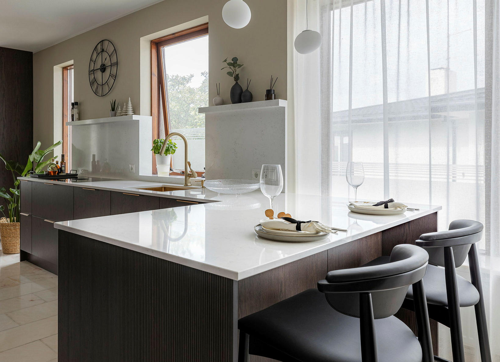
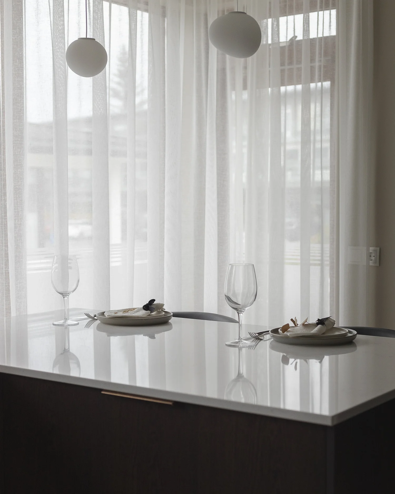
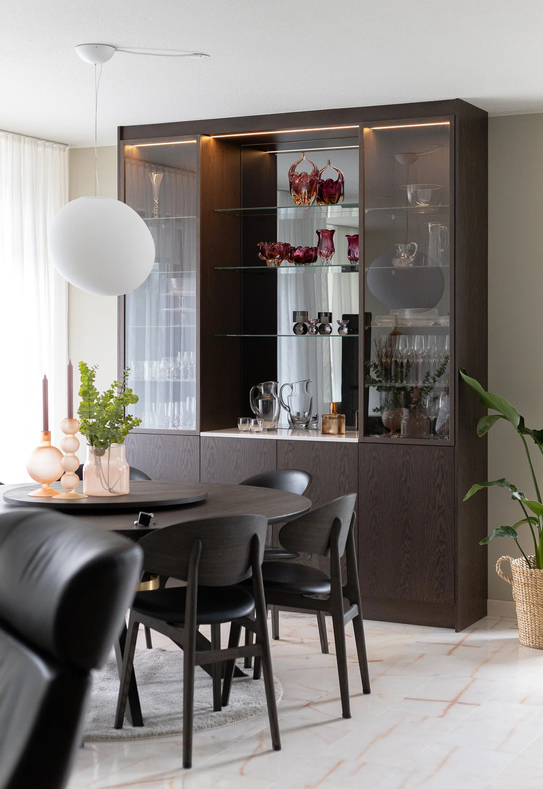
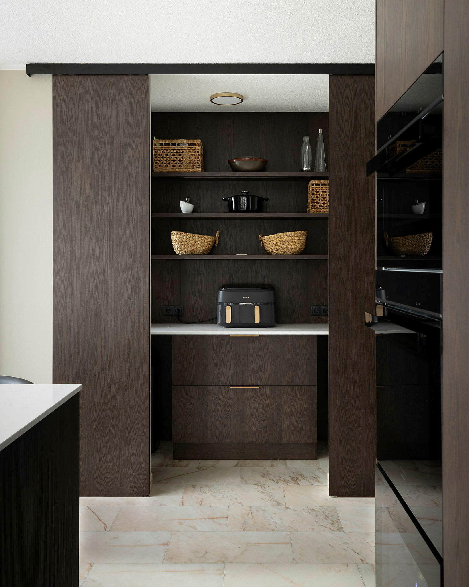
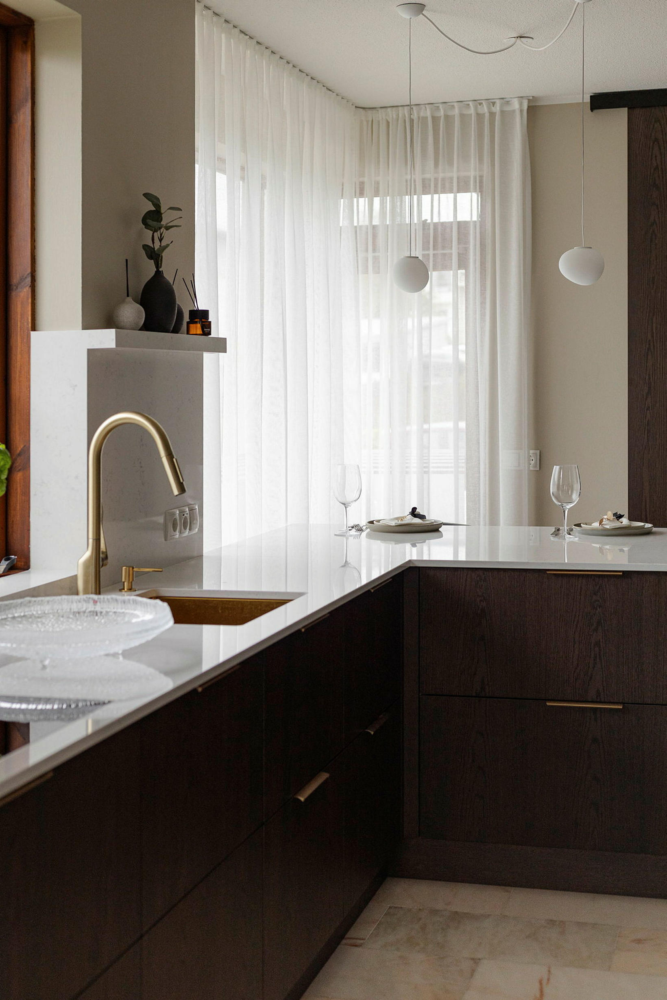

Eldhús í Laugardal
Eldhús í húsi frá 1985, teiknuðu af Kjartani Sveinssyni — dökkur viður og hvítyrjóttur steinn ofan á upprunalegum bleikum marmara sem fékk að halda sér.
Eldhúsinu var upprunalega skipt í þrjú rými — eldhús, borðkrók og fína borðstofu. Þegar milliveggir voru farnir stóð eftir eitt stórt og langt rými, opinn strigi fyrir nýja innréttingu. Áskorunin lá í gólfinu: bleiki marmarinn er upprunalegur og var slípaður og bónaður í stað þess að hrófla við honum, svo hvorki vatn né rafmagn var fært að ráði.
Innréttingin er teiknuð frá gólfi í loft: heilklæddur tækjaveggur með innfelldum ofnum og kaffihorni losar vinnufleti eyjunnar, og tangi við eyjuna nýtist jafnt sem matar- og vinnuborð, baðaður dagsbirtu. Borðplatan er hvítyrjótt og höfð einföld svo gólfefnið fái að njóta sín. Búrið var endurgert, hurðagat breikkað og rennihurð sett í.
Við matarborðið var sérhannaður glasaskápur með innfelldri lýsingu sem rammar inn borðhaldið og heldur heildarsvip í gegnum bæði rými.





